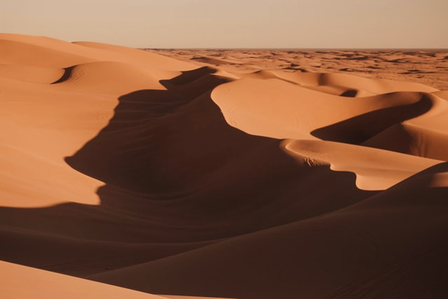
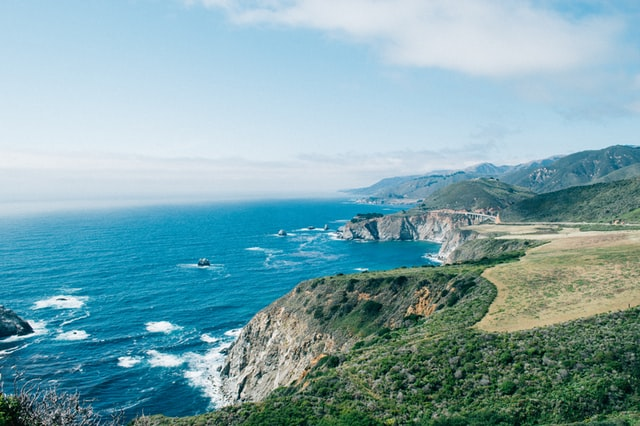
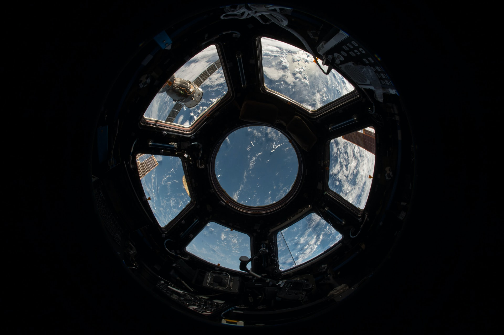
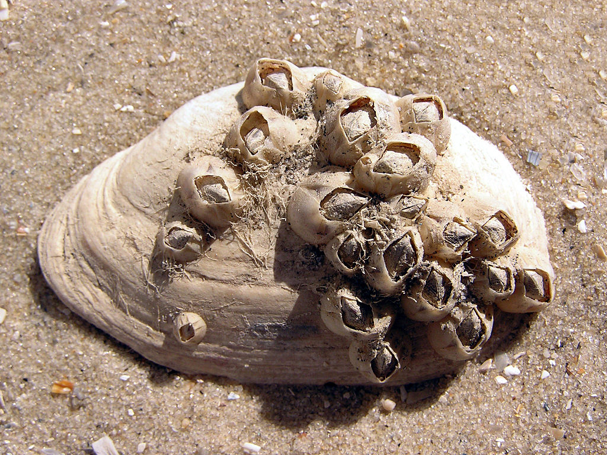

Tardigrades are often found on lichens and mosses, for example by soaking a piece of moss in water, and generally, soil, leaf litter, and marine or freshwater sediments, where they may occur quite frequently (up to 25,000 animals per litre). One tardigrade, Echiniscoides wyethi, may be found on barnacles. Tardigrades are the first known animal to survive after exposure to outer space. Other environments they are found in include:
Dunes  Coasts Space Barnacles